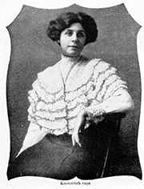
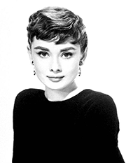
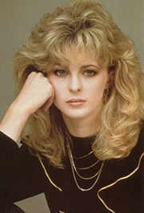

· Hair Styles of the Last 100 Years ·
.1910s.
“Curtain Hair”
.1920s.
Wavy Bob Cuts
.1930s.
Jean Harlow curls
.1940s.
Victory rolls
.1950s.
Audrey Hepburn Look
.1960s.
The Flip
.1970s.
The Shaggy Layer Cut
.1980s.
Romantic Style with Layers
.1990s.
The Rachel
- What Is Toady's Trends? -